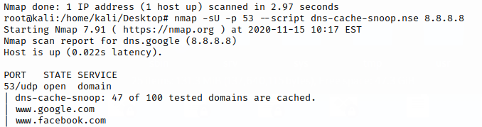

nmap (NSE)
dns-cache-snoop.nse
Nmap script for DNS Cache Snooping. We can use it in two modes: Nonrecursive, Timed
Nonrecursive mode nmap nmap -sU -p 53 --script dns-cache-snoop.nse [nameserver]
--script-args 'dns-cache-snoop.domains={host1,host2,host3}' → use a different list of domains to resolve instead of the default list of domains to check that are the top 50 most popular sites, each one being listed twice, once with "www." and once without
example: against Google DNS at 8.8.8.8
Timed modeIt can be less accurate then nonrecursive mode and take more time
◇
nmap nmap -sU -p 53 --script dns-cache-snoop.nse --script-args 'dns-cache-snoop.mode=timed,dns-cache-snoop.domains={www.google.com,facebook.com,www.youtube.com}' [nameserver]
nmap -sU -p 53 --script dns-cache-snoop.nse --script-args 'dns-cache-snoop.mode=timed' [nameserver]
--script-args 'dns-cache-snoop.mode=timed' → timed mode instead of the default nonrecursive mode
--script-args 'dns-cache-snoop.domains={host1,host2,host3}' → use a different list of domains to resolve instead of the default list of domains to check that are the top 50 most popular sites, each one being listed twice, once with "www." and once without
NSE DNS scripts
root@kali:/# ls /usr/share/nmap/scripts/dns*